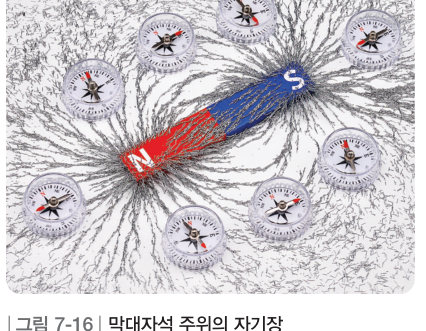
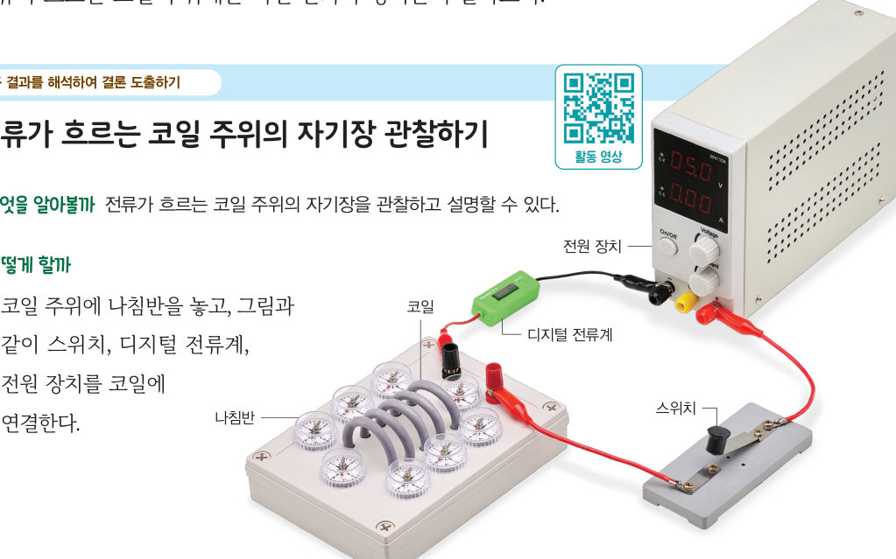
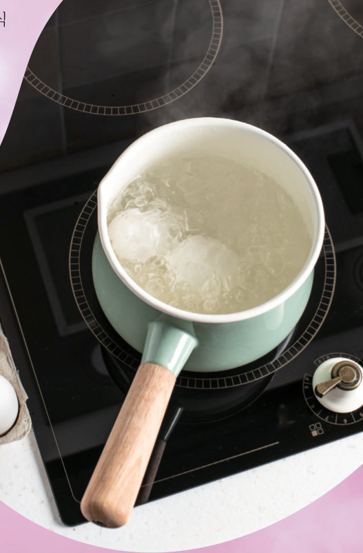
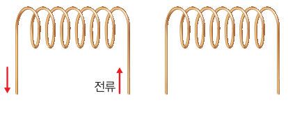

코일은 어떻게 자석을 끌어당기는 것일까? 가상 코일 주위에 나침반을 늘어놓고 전류의 방향과 세기를 바꾸며 바늘의 움직임과 클립이 끌려 오는 정도를 관찰한 뒤, 오른손 법칙으로 자기장의 방향을 찾아보자.
🎯 이 단원을 배우면 — 전류가 흐르는 코일 주위의 자기장을 설명할 수 있다.
세 번째 블록전동기를 더 빨리 회전하게 하려면 어떻게 해야 할까? 251쪽
“드라이어의 바람으로 젖은 머리를 말리고 있어.” “공기 청정기의 전동기가 빠르게 회전하면 공기를 더 빨리 순환하게 하는 것처럼 드라이어의 전동기가 빠르게 회전하면 머리를 더 빨리 말릴 수 있대.” 이 단원의 힌트 조각(전류가 흐르는 코일 주위의 자기장 · 전류가 흐르는 코일이 받는 힘)을 모으면 전류의 자기 작용을 알고, 전동기의 원리를 이해하여 세 번째 블록 질문에 답할 수 있다.
이 단원과 관련해 이미 알고 있는 것에 표시해 보자.
교과서자기력과 자기장 252쪽
자석에 나침반을 가까이 하면 나침반 바늘이 움직인다. 이는 자석 주위에 자기력(자석과 자석, 자석과 철로 된 물체 사이에 작용하는 힘)이 작용하기 때문이다. 자석 주위에 철 가루를 뿌리면 철 가루가 자기력을 받아 배열된다. 자석 주위와 같이 자기력이 작용하는 공간을 자기장이라고 한다. 자기장의 방향은 나침반 바늘의 N극이 가리키는 방향이다.

그림 7-16막대자석 주위의 자기장
탐구 · 탐구 결과를 해석하여 결론 도출하기전류가 흐르는 코일 주위의 자기장 관찰하기 252~253쪽

252쪽① 코일 주위에 나침반을 놓고 스위치, 디지털 전류계, 전원 장치를 코일에 연결한다. ② 스위치를 닫았을 때 나침반 바늘의 N극이 가리키는 방향을 관찰한다. ③ (+)극과 (-)극에 연결된 전선을 바꾸어 전류의 방향을 반대로 바꾼다. ④ 클립을 실로 매달아 코일에 가까이 가져간 뒤 스위치를 닫는다. ⑤ 전류의 세기를 세게, 약하게 하며 클립의 움직임을 관찰한다.
⚠️ 전류가 흐르는 동안 코일을 만지지 않도록 하고, 코일에 너무 센 전류가 흐르지 않도록 주의한다.
가상 실험실코일과 나침반 (위에서 본 모습)
스위치를 닫고 나침반 바늘의 N극(빨간색)을 관찰하자. 지구 자기장 때문에 전류가 없을 때 바늘은 모두 화면 위쪽(북쪽)을 가리켜요.
전류의 세기0.6 A
클립 매달기전류의 세기와 자기력
1전류의 방향이 바뀌면 나침반 바늘이 가리키는 방향이 . 전류의 세기를 세게 하면 클립이 끌려 오는 정도가 .
2처음 전류 방향일 때 나침반 A(코일 왼쪽 끝 바깥)의 N극은 , B(코일 안)는 , C(코일 위쪽 바깥 가운데)는 방향을 가리킨다.
💬결론 도출 코일에 흐르는 전류의 방향과 세기를 바꾸었을 때 나침반과 클립의 변화로 알 수 있는 것을 이야기해 보자.
교과서전류가 흐르는 코일 주위의 자기장 254쪽
코일에 전류가 흐르면 코일 주위에 자기장이 생긴다. 전류가 흐르는 코일 주위에 생기는 자기장의 모양은 막대자석 주위에 생기는 자기장의 모양과 비슷하다. 이때 자기장의 방향은 오른손 네 손가락을 코일에 흐르는 전류의 방향으로 감아쥐었을 때 엄지손가락이 가리키는 방향이다.
코일에 흐르는 전류의 방향이 바뀌면 나침반 바늘의 N극이 가리키는 방향이 바뀌는데, 이는 코일 주위의 자기장 방향이 바뀌기 때문이다. 또 코일에 흐르는 전류의 세기가 더 세지면 클립이 끌려 오는 정도가 더 커지는데, 이는 코일 주위의 자기장 세기가 증가하기 때문이다.
전류가 흐르는 코일 주위에 자기장이 생기는 현상을 이용하면 전자석을 만들 수 있다. 전자석은 코일에 흐르는 전류의 방향과 세기를 조절하여 자기장의 방향과 세기를 조절할 수 있어 전자석 기중기나 자기 부상 열차 등에 이용된다.
그림 7-17전류가 흐르는 코일 주위의 자기장 — 오른손 네 손가락을 전류의 방향으로 감아쥐면 엄지손가락이 자기장의 방향
🧩 세 번째 블록 조각
코일에 흐르는 전류의 세기가 세지면 코일 주위의 자기장의 세기가 .
과학이 톡 · 전류가 흐르는 코일로 요리하는 인덕션 레인지

인덕션 레인지를 켜면 안에 있는 코일에 전류가 흐르면서 자기장이 생기는데, 이 자기장으로 조리 도구에 에너지를 전달하여 조리 도구를 뜨겁게 만든다. 직접 열을 내어 조리 도구에 전달하는 것이 아니기 때문에 조리 도구를 올려놓지 않으면 윗면이 뜨거워지지 않아 화상 피해가 적고, 화석 연료가 탈 때 나오는 이산화 탄소 같은 물질이 배출되지 않는다.
스스로 확인하기252쪽 학습 목표를 달성했는지 확인해 보자 254쪽
1개념 확인 코일에 전류가 흐르면 코일 주위에 이/가 생긴다.

254쪽나란히 놓인 코일 (가)와 (나) — 코일 (가)에는 화살표 방향으로 전류가 흐른다.
2사고력 코일 (가)와 (나) 모두에 전류가 흐르고, 두 코일 사이에는 서로 끌어당기는 방향으로 자기력이 작용할 때 코일 (나)에는 코일 (가)와 방향으로 전류가 흐른다.
3위 2번의 답을 고른 까닭을 오른손 법칙으로 설명해 보자.
5분 테스트전류가 흐르는 코일 주위의 자기장
1자석 주위에 이 작용하므로 나침반 바늘이 움직인다. 자기력이 작용하는 공간을 이라고 하며, 자기장의 방향은 나침반 바늘의 극이 가리키는 방향이다.
4코일에 전류가 흐르면 코일 주위에 이 생긴다. 그 방향은 오른손 네 손가락을 코일에 흐르는 의 방향으로 감아쥐었을 때 엄지손가락이 가리키는 방향이다.
6코일에 흐르는 전류의 세기가 세지면 자기장의 세기는 한다. 코일에 흐르는 전류의 방향이 바뀌면 코일 주위의 의 방향도 바뀐다.
스스로 정리하기전류가 만드는 자기장 260쪽
1전류가 만드는 자기장
⑴ : 자기력이 작용하는 공간 ⑵ 코일에 이/가 흐르면 코일 주위에 자기장이 생긴다. 자기장의 방향은 오른손 네 손가락을 전류의 방향으로 감아쥐었을 때 이/가 가리키는 방향이다. ⑶ 코일에 흐르는 전류의 세기가 셀수록 의 세기가 증가한다.
평가 기준
스스로 평가
지식·이해 전류가 흐르는 코일 주위의 자기장을 설명할 수 있는가?
과정·기능 코일 주위의 자기장을 관찰하고 결과를 해석하여 결론을 도출했는가?
가치·태도 눈에 보이지 않는 현상을 간접적으로 관찰하며 자연에 대한 감수성을 길렀는가?
제출학생 정보 · 제출하기
모든 활동을 마친 뒤 제출하면 전체가 한 번에 채점되고 피드백이 나타나요. 답안은 선생님 스프레드시트(중2 탭)에 기록돼요.